The one thing to know: getting back
Everything else in this manual is detail. This is the app. Three presses, and you can do the first one before you have read anything.
1 · MARK IT
At the car, the boat, the trailhead, the gate you came through — tap MARK POINT. The strip says MARKED. That is the whole step; there is no dialog to get through.
2 · GO
Walk, ride, paddle, hunt, pick mushrooms. Put the phone in your pocket. The app needs nothing from you in between and no signal at any point.
3 · BACK TO LAST POINT
Tap it and the instrument turns around. The arrow points at your point, the strip counts the distance down, and both keep working with no network.
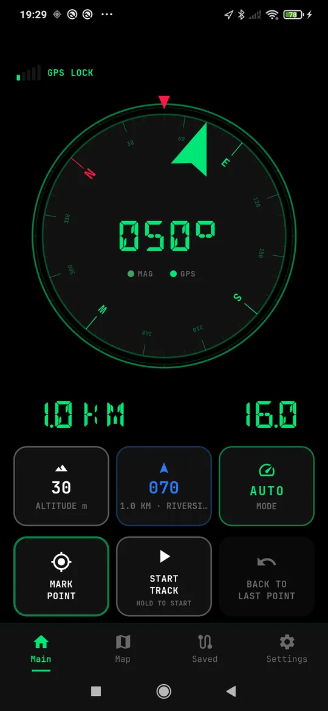
What you will see on the way back
The green arrow on the dial points at the point, not at north — turn until it is at the top and walk that way. The left half of the readout strip is the distance remaining, and it counts down as you close in.
When you are within arrival range the strip says ARRIVED and the arrow stops pretending to know a direction, because at ten metres a bearing is noise.
If you want the start of a recording instead
Holding START TRACK to begin a recording also drops a start point where you stood. So after a day out, "back to where I parked" is the same one press — the point is already there and it is the newest one.
If you want an older point
Hold BACK TO LAST POINT to open the list and pick any point you have saved. Every row shows how far away it is from where you are standing now.
None of this needs a map, a subscription or a signal. It is a compass, a coordinate and arithmetic.
First run
The app asks for location once and never again. Until the receiver has a position, the action buttons stay dim — a button that pretends to work without a fix is worse than a button that waits.
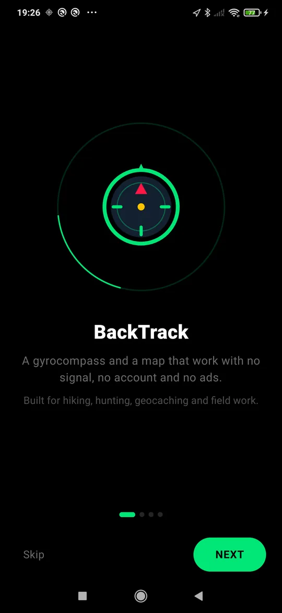
Go outside first
A GPS receiver needs sky. Indoors you will see SEARCHING and the buttons will stay asleep; by a window it may take a minute; outdoors it is usually seconds.
When the position arrives the status line turns to GPS LOCK and everything wakes up at once.
Skip the tour if you like — nothing in the app is hidden behind it.
The main screen, every part of it
One instrument, one readout strip, six tiles. Nothing moves, so your thumb learns the positions once and keeps them. Several tiles do a second thing when you hold them — the labels tell you which, and this is the list.
1 · The signal bar
Five bars and a word: SEARCHING, GPS LOCK, or how long ago the last fix was if it has gone stale. Tap it to open the GPS signal screen — accuracy, satellites, interference. If the app suspects jamming, the tap goes straight to that part. Holding it opens the same screen with a short buzz.
2 · The instrument
Tap the dial to change face. Five of them, in this order: compass → level → map → trip computer → speedometer → back to the compass. Your choice is remembered between sessions.
Hold the dial while the level is showing and it re-zeroes against however the phone is lying right now — for taking a second reading off a different surface without leaving the instrument.
The small MAG and GPS lamps under the heading say which source the heading is coming from at this moment.
3 · The readout strip
Distance on the left, speed on the right, in seven-segment digits you can read at arm's length. While you are navigating, the left half shows how far is left to the target; otherwise it shows your heading. Notices such as ARRIVED or COMPASS READY take the strip over for a few seconds and scroll if they are too long to fit.
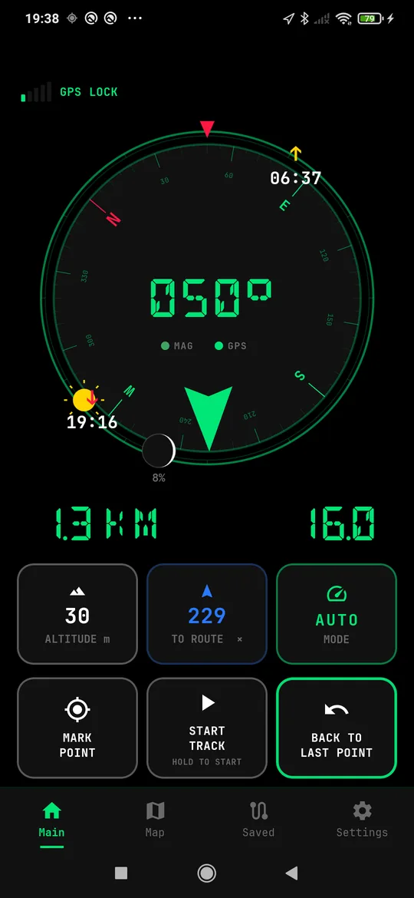
4 · ALTITUDE — and hold it for the sun
The tile shows height above sea level, smoothed so a single poor fix does not make it jump. Dashes mean the receiver has not offered a trustworthy height yet.
Hold it and the sun appears on the rim of the compass in the direction it is actually in, with sunrise and sunset for your position and today. The moon comes with it, drawn in its real phase with the lit percentage. Hold again to put them away.
On a fresh install the tile says HOLD FOR SUN until you have found it once. After that it never mentions it again.
5 · The target tile
Normally your bearing. Once you are navigating, it takes the name of the target and grows a small ×. Tapping it — or holding it — stops the guidance and says NAV STOPPED. It turns red and reads OFF ROUTE when you leave a route you were following, and TO ROUTE while you are making your way back to one.
6 · MODE — which compass you are reading
Hold it to cycle the heading source:
- AUTO — the default. Gyroscope carries the heading, the magnetometer sets it straight when the magnetic field is clean, GPS corrects it while you move.
- MAG — magnetometer only. Honest near nothing metal, hopeless near a car.
- GPS — course over ground only. Needs you to be moving, immune to metal.
If the phone has no usable magnetometer the MAG step is skipped, so you cannot land in a mode with nothing to read from.
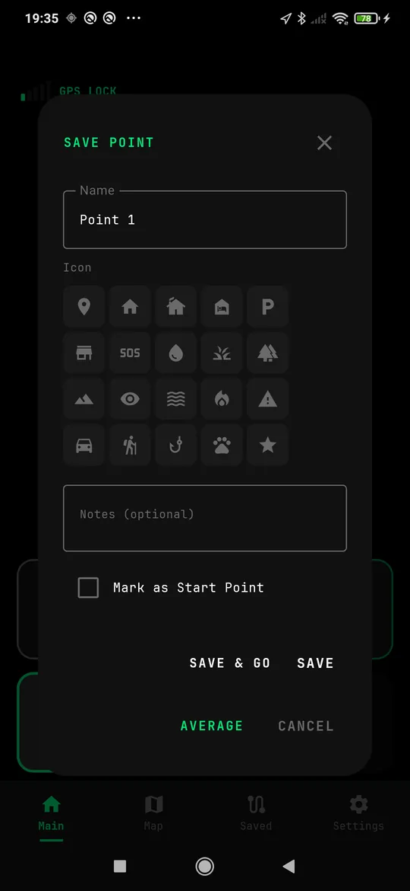
7 · MARK POINT — tap saves, hold asks
Tap and the point is saved where you stand, with the next free name, and the strip says MARKED. One thumb, no dialog — which is the whole point when it is raining.
Hold and you get the sheet instead: name it, give it an icon so a spring is not the same as a gate on the map, add a note, flag it as a start point, or press AVERAGE and stand still for thirty seconds for a properly placed one.
8 · START TRACK — hold to start, hold to stop
A tap does nothing on purpose and the tile says so: HOLD TO START. A single tap is what a pocket does, and a pocket must not be able to end a five-hour recording.
While recording, the tile turns red, pulses, counts the elapsed time and reads HOLD TO STOP. Starting also drops a start point where you stood, so "back to where I left the car" is one press later on.
9 · BACK TO LAST POINT
Tap and the instrument turns around: the arrow points at the last point you saved and the strip counts down the distance. This is the button the app is named after.
Hold it to open the full list instead, and pick a different one.
When the tiles are dim
The three lower tiles stay dim until there is a current position — not merely any position. A button that writes down the wrong place is worse than a button that waits, and a fix from yesterday's walk is the wrong place.
Swiping left goes to the map, swiping right to settings — the same places the bottom bar takes you.
Five faces, one instrument
Tap the dial to cycle. The choice is remembered, and changing face never costs you your heading or your navigation — the arrow to your target is drawn on every one of them.
1 · Compass
A gyro compass, not a magnetometer needle. The gyroscope carries the heading through the moments a magnetic compass cannot be trusted — near a car, a fence, a rifle, a phone mount — and the magnetometer quietly corrects the drift when the field is clean again.
The two lamps tell you which source is in charge. If the field is disturbed the app says COMPASS UNSURE and shows you how to wave the phone to fix it.
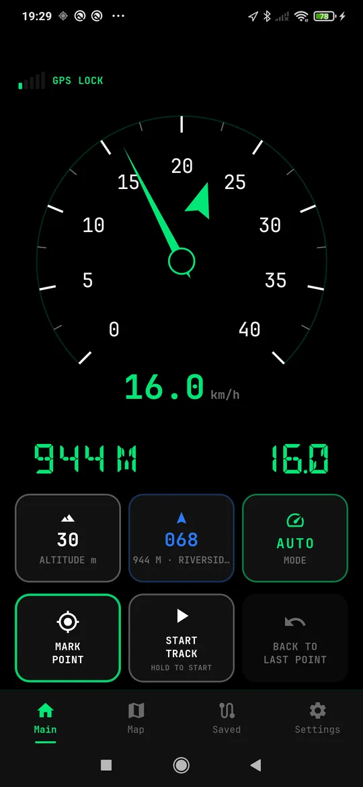
2 · Speedometer
A car-style dial with a real scale and a needle, and the exact figure underneath. The needle is smoothed on purpose: GPS reports once a second and a raw needle would twitch at every reading.
The scale steps 40 → 80 → 160 km/h and only ever upward while the app is running, so the numbers stay where your eye left them. A yellow mark on the rim and a MAX line record the fastest moment of the ride.
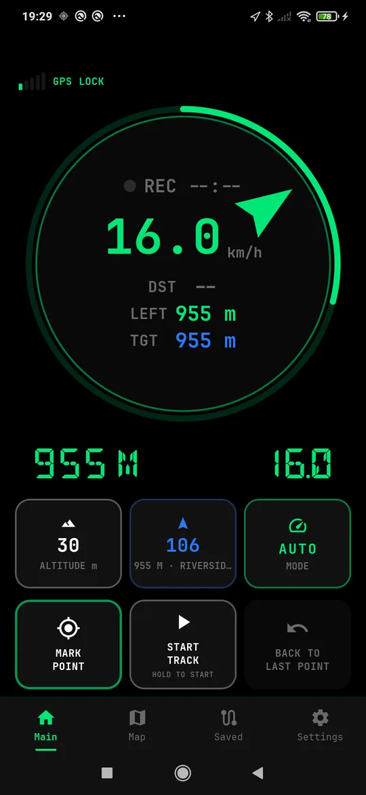
3 · Trip computer
Speed, distance covered, time recording, and distance to your target. When a route is loaded the ring around the rim fills as you go: one glance says about three quarters done without reading a number and comparing it to one you remembered twenty minutes ago.
With a route loaded the LEFT row shows exactly how much of it remains. With no route, the ring is not drawn at all and the row shows your average speed instead.
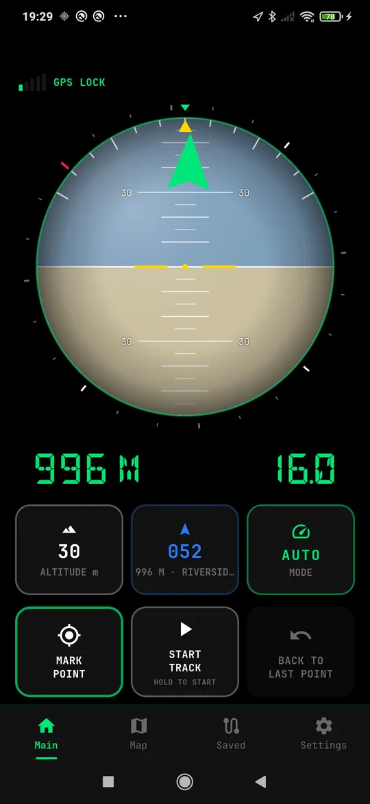
4 · Level
An artificial horizon. Zeroed against however the phone is held when you switch to it, so it answers how far from where I started — which is the question when you are levelling a mount, a panel or a camp table.
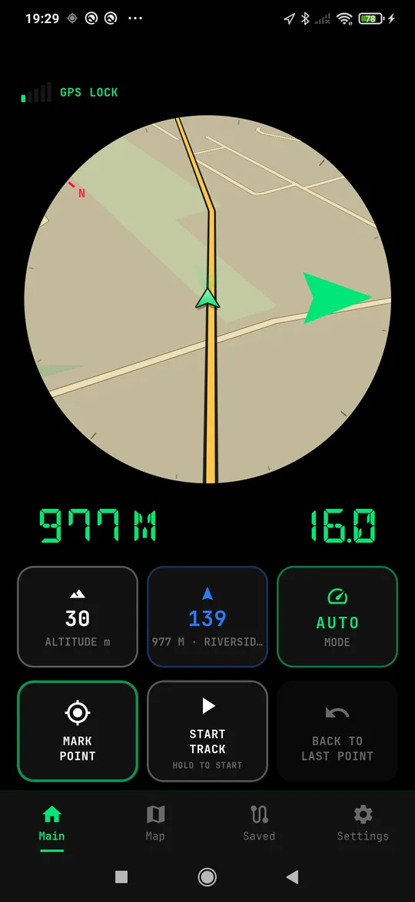
5 · Map
The map inside the instrument, the way a car cluster does it. Enough to see the next bend without leaving the screen your hands already know.
Saving a point
Mark point
Tap MARK POINT and the point is saved where you stand. Give it a name, pick an icon so you can tell a spring from a gate on the map, and add a note if you want one.
SAVE & GO saves it and starts guiding you to it at once. Mark as Start Point flags it as the place you came from — the one you will want back.
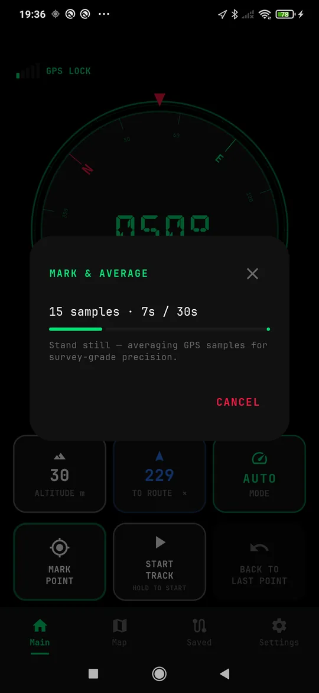
Averaged point — when one reading is not enough
A single GPS fix wanders by several metres. If the point matters — a boundary peg, a hive, a trap, a survey mark — press AVERAGE and stand still. The app collects readings for thirty seconds and takes the middle of them.
Standing still is the whole trick: the errors in consecutive fixes pull in different directions and cancel, which a single reading can never do.
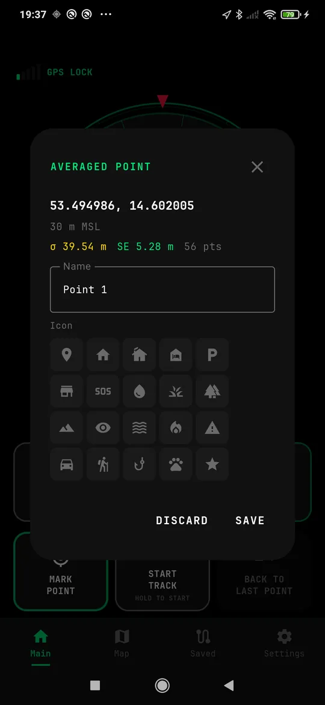
…and it shows you how good it was
When it finishes you get the coordinates, the height, and two numbers that tell you whether to trust them:
- σ — how much the individual readings scattered.
- SE — how tight the average itself is. This is the one that matters.
- pts — how many readings went in.
Save it or discard it. An averaged point that came out poor is worth knowing about before you rely on it, not after.
The map
Controls are split by what they do. How you look at the map sits on the right; what you do with it sits on the left. Both columns are within a thumb.
The controls
1 — NET and HEAD UP. Whether the map may use the network, and whether it turns with you or keeps north at the top. A crossed globe in yellow means you asked for the network and it is not there; in white, that you switched it off yourself.
2 — REC, SAVE MAP, MEASURE. Record a track, save this area for offline use, and the measuring tool.
3 — TILT and FOLLOW. Lean the map into 3D; keep the camera on you. Press FOLLOW again after dragging the map to get the camera back.
4 — Zoom, with AUTO. Plus and minus for gloves and wet screens. With AUTO on, the map opens up when you stop — because stopping is when you are looking for something rather than following it.
The strip along the top is the trip computer: heading, what you are heading for, and speed. The bar at the bottom left is the scale.
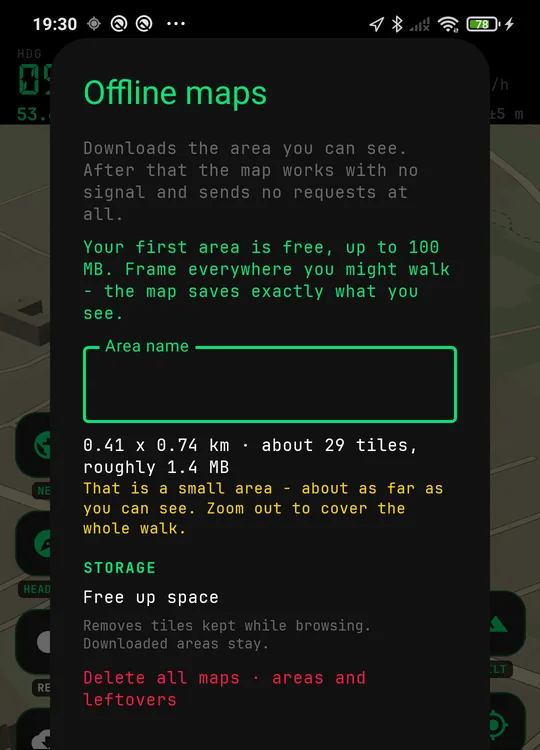
Saving a map for no-signal use
Frame the ground you might walk, press SAVE MAP, and the app downloads exactly what you framed. After that the map draws with the radio off and asks the network for nothing.
The panel tells you the size before you commit — kilometres across, number of tiles, megabytes. Your first area is free.
Zoom out before saving: the area you see is the area you get.
Following a route
Load a route from a file or draw one on the map, then walk or ride it. The app shows the line, the way to it, and how much of it is behind you.
Start, finish, and the part in between
Press and hold the route line on the map and you can set START HERE and FINISH HERE anywhere along it — the app then follows only the slice between them, and the header tells you its length against the whole.
Both ends are marked on the map: an open ring where the route begins and a chequered disc where it ends. If the route is a loop, the two sit in one place and are labelled as one.
TURN AROUND walks the same line the other way. You do not need a fix to plan any of this — you can cut a route at the kitchen table.
Measuring
One tool, two answers. Tap MEASURE, then tap the map to drop corners. Three corners close a shape by themselves — there is no button to press.
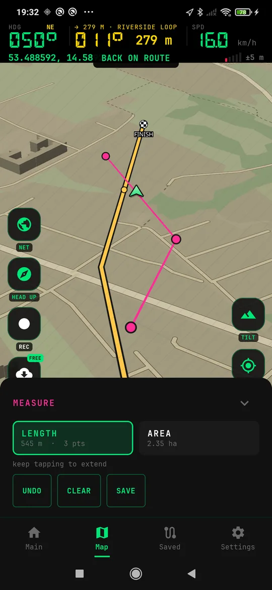
Distance
Tap along whatever you want the length of — a fence line, a path, a swim, the walk back to the car. The panel counts the total and the number of corners as you go.
UNDO takes back the last corner, CLEAR starts again, and SAVE keeps the line as a track you can navigate later.
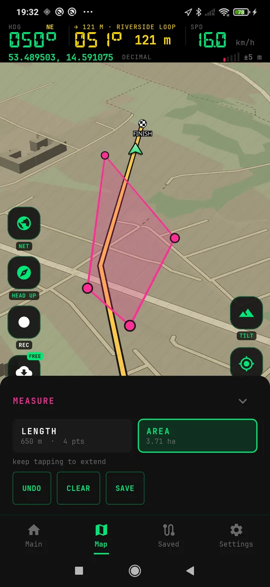
Area
Switch the panel to AREA and the same corners become a plot. You get hectares (or acres) and the perimeter, and the shape fills in so you can see what you actually enclosed.
Saved plots keep their area. Export them as KML and they stay real areas in Google Earth — see below for why the format matters here.
If the outline crosses itself there is no single area to report, and the app says so rather than inventing a number.
Tracks, points and files
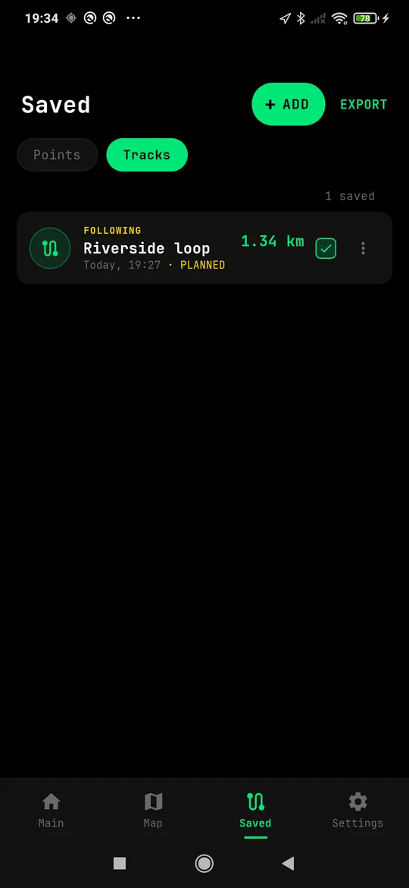
Your lists
Saved holds two lists: points and tracks. The tick on each row controls whether it is drawn on the map — it deletes nothing and switches nothing off, it just keeps the map from getting crowded.
Tapping a row takes you to that place on the map. Navigating to it is a separate choice in the row menu, because looking at something and being sent to it are not the same request.
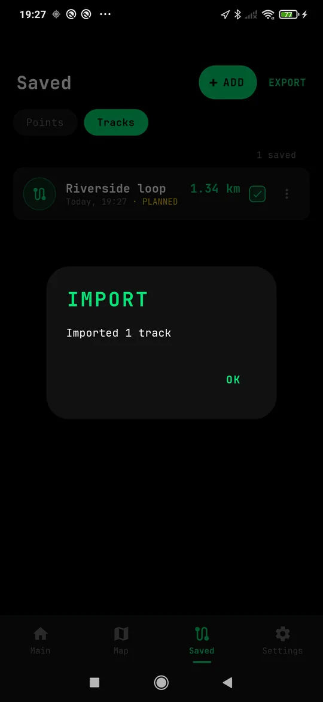
Import — GPX, KML and KMZ
ADD opens a file. GPX is what trail portals and GPS units hand out; KML and KMZ are what Google Maps, My Maps and Google Earth hand out. All three go in.
The app works out which is which by looking inside the file, not at its name — a file
renamed by a messenger app, or a KMZ saved with a .kml ending, still
opens.
A file with unreadable points imports the readable ones and tells you how many it skipped. A partial import you know about beats a silent one.
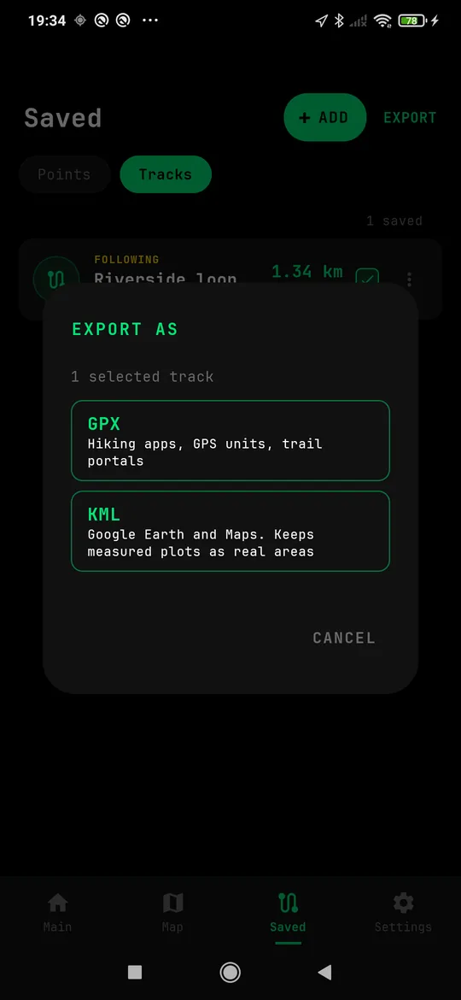
Export — and which format to pick
EXPORT sends out whatever is ticked in the list, as one file, and asks which format first.
- GPX — hiking apps, GPS units, trail portals.
- KML — Google Earth and Maps. Keeps measured plots as real areas.
That last line is the whole reason the choice exists. GPX has no idea of a polygon, so a plot written to GPX comes back as a plain line and the hectares are gone. If your selection contains measured plots the dialog says so before you choose.
Import and export are free, in every format. Getting your own data out of an app was never something to sell.
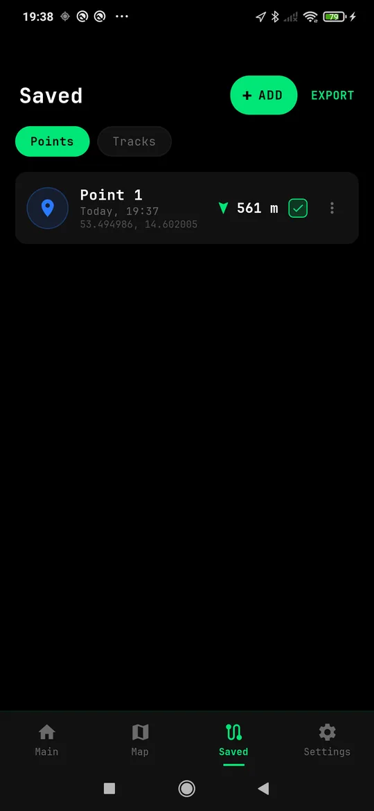
Points
Each row carries the distance from where you are now, so the list sorts itself in your head. Rename, navigate, export or delete from the row menu.
Sun and moon
How much daylight is left
Press and hold ALTITUDE. The sun appears on the rim of the compass in the direction it is actually in, with sunrise and sunset for your position and today's date. Hold again to put it away.
The moon is drawn in its real phase for where you are standing — the lit part is the lit part, with the percentage next to it. You can see at a glance whether tonight gives you a full moon to walk by or nothing at all.
No network needed. It is arithmetic, not a lookup.
The receiver, with the lid off
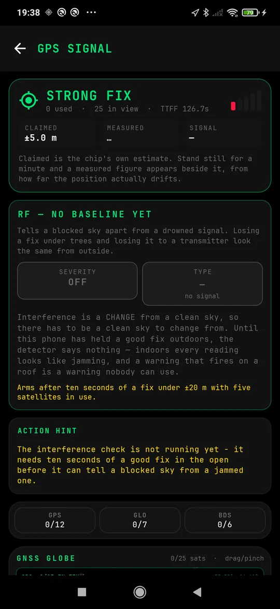
GPS signal
Tap the signal bars at the top of the main screen. You get what the chip claims, what the app measured by watching the position drift while you stood still, satellites per constellation, and a live sky globe.
Interference, said carefully
The app can tell a blocked sky from a drowned signal — trees and a roof look the same from the outside, and calling one the other is how a warning gets ignored when it is finally real.
It will not accuse anything until it has first seen clean sky. Jamming is a change from a good baseline, so until the detector has held a solid fix in the open it says exactly that and gives no verdict. An app that cries jamming in your own kitchen has taught you to ignore it by the time it matters.
Settings worth knowing about
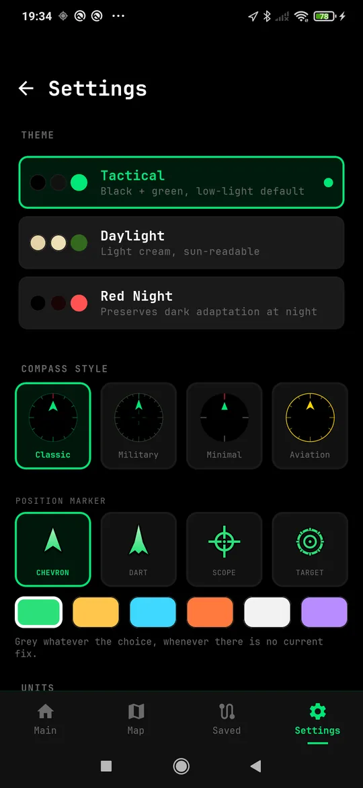
Three themes
Tactical is black and green for low light. Daylight is a light, sun-readable scheme for a bright screen outdoors. Red Night keeps your dark adaptation.
Compass style and marker
Four dial engravings and four position markers, in whatever colour you can pick out against your ground. The marker goes grey whenever the position is not current — so a stale fix never looks like a live one.
Units, coordinates, screen
Metric or imperial; decimal degrees, degrees and minutes, or DMS; keep the screen awake while the app is open. Background recording has its own switch and explains what Android does to apps that sleep.
What PRO adds
PRO is about maps, and only about maps.
FREE FOREVER
Compass, waypoints, tracks, route following, measuring, sun and moon, the signal screen — and import and export in every format. Plus one saved map area.
PRO
Maps from the server at full detail, and as many saved offline areas as you like. One payment, not a subscription.
NOT SOLD
Your position, your tracks, your points. Nothing is uploaded, there is no account and there are no ads. See the privacy note.
Every screen, at a glance
Your position never leaves the phone
BackTrack has no account, no analytics and no ads. Your points, tracks and position stay on the device. The only thing that touches the network is map tiles, and only when you have the network switched on — an app used with the radio off should behave as if the radio is off.